Visualizando Neuroevolução com UMAP
Resumo
A neuroevolução produz populações de redes ao longo de gerações, mas faltam ferramentas para visualizar e comparar esse processo. Esta dissertação investiga o uso de UMAP com alinhamento temporal para projetar o espaço de pesos de redes neuroevoluídas. Partindo da pergunta prática de qual métrica de distância usar, a investigação revela um mistério — em controle (HalfCheetah) o espaço de pesos não organiza a fitness — cuja causa são as simetrias da rede (permutação de neurônios, sinal, escala), que espalham soluções funcionalmente idênticas. Mostramos que espaços invariantes a essas simetrias (comportamental e de grafo) resolvem o problema e estendem o método para topologia variável. Por fim, demonstramos uma recompensa: um ajuste conjunto de UMAP no espaço de pesos revela assinaturas geométricas de busca específicas de cada algoritmo de Evolution Strategy — validadas como invariantes à tarefa em 4+ benchmarks. Todos os 25 experimentos são reprodutíveis; um sanity-check (ES em funções com ótimo conhecido) foi decisivo ao revelar e corrigir um erro de sinal na otimização.
Palavras-chave: neuroevolução · visualização de espaço de pesos · UMAP · Evolution Strategies · simetrias de redes neurais · quality-diversity · embeddings de grafo.
Objetivos e perguntas de pesquisa
O trabalho se organiza em torno de quatro perguntas, cada uma correspondendo a uma parte do corpo:
- PP1. Como projetar fielmente populações neuroevoluídas em 2D/3D? Qual métrica de distância e quais hiperparâmetros? (Partes 0–1)
- PP2. O espaço de pesos organiza a fitness das soluções? Caso não, qual espaço o faz? (Parte 2)
- PP3. Por que algoritmos distintos não convergem ao mesmo ponto, mesmo achando soluções equivalentes? (Parte 3)
- PP4. A geometria da projeção permite caracterizar e comparar algoritmos de busca? É invariante à tarefa? (Parte 4)
Contribuições
- C1 — Metodológica: protocolo de UMAP com alinhamento temporal para neuroevolução, com escolha fundamentada de métrica (euclidean/mahalanobis) e dimensão (3D > 2D para organização de fitness, +67%).
- C2 — Diagnóstica: demonstração empírica de que o espaço de pesos é cego à equivalência funcional, e que espaços comportamental/de grafo a recuperam — incluindo prova de invariância à permutação (razão intra/entre ≈ 10⁻¹⁵).
- C3 — Analítica: identificação de assinaturas geométricas de busca por algoritmo, validadas como invariantes à tarefa em 4+ benchmarks, e quantificadas (fragmentação, compactness, dinâmica).
- C4 — Reprodutibilidade: 25 experimentos versionados e re-executáveis; sanity-checks que capturaram um erro de sinal na otimização antes de qualquer conclusão.
As seções a seguir são apresentadas como uma investigação — pergunta → mistério → causa → recompensa — e não como lista cronológica. Cada experimento traz o que, como e como replicar.
pixi em
supplementary/: pixi run python experiments/<arquivo>.py.
Experimentos do HalfCheetah que geram pesos/comportamento usam o ambiente JAX/Brax em
brax/.venv (.venv/bin/python <script>.py).
Figuras → figures/, métricas → results/.Índice
Background teórico
Neuroevolução. Algoritmos populacionais otimizam pesos de redes por mutação e seleção, mantendo uma população de indivíduos por geração (resistência a ótimos locais, paralelismo implícito). Estudamos MLPs de uma camada oculta com seleção elitista — baseline simples usado em estudos de larga escala.
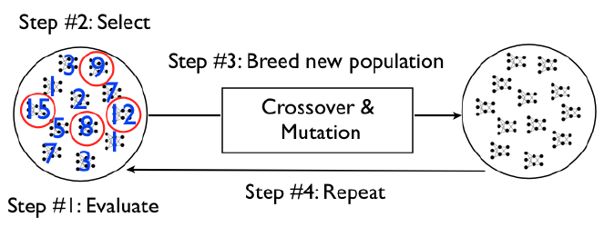

Por que population-level importa (teoria). Evidências recentes mostram que a neuroevolução não é só um SGD sem gradiente: Lehman et al. mostram que Evolution Strategies otimizam a recompensa média da população perturbada (buscando regiões robustas, não o gradiente pontual); Kumar et al. argumentam que o SGD tende a representações fractured/entangled, enquanto a busca evolutiva aberta pode achar representações mais unificadas. A estrutura relevante (multimodalidade, coexistência de bacias, fluxo) vive na geometria da população — invisível em curvas de fitness escalares. Daí a motivação de visualizá-la.
UMAP e alinhamento temporal. UMAP preserva estrutura local e global via aproximação de variedade. O desafio em dados sequenciais é que cada projeção independente difere por rotação/reflexão/translação arbitrária. Adaptamos a metodologia de campo vetorial sobre projeções alinhadas de Cantareira et al. (originalmente para ativações de uma rede ao longo do treino) para populações de redes ao longo de gerações.
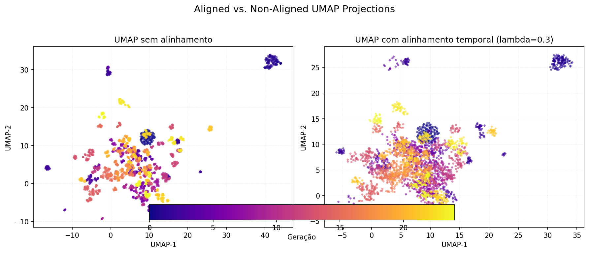
Metodologia
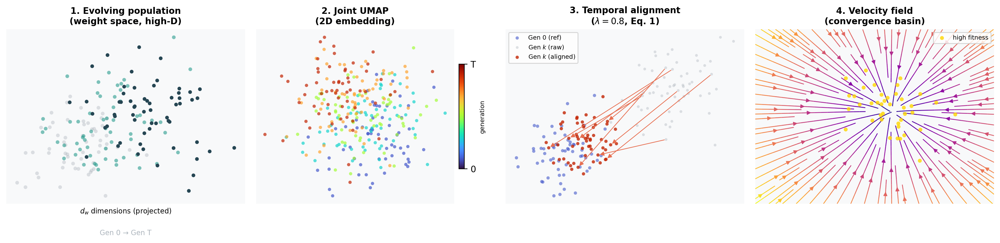
UMAP alinhado (ancoragem por referência). Todos os indivíduos de todas as gerações são projetados num único UMAP (sistema de coordenadas compartilhado), e cada geração é interpolada em direção à geração 0:
Z̃k = (1 − λ)·Zk + λ·Zref, λ ∈ [0,1] (λ=0: cru; λ=1: colapsa na referência; usamos λ=0.8).
Campos de velocidade populacional. A partir das projeções alinhadas, particiona-se o espaço numa grade 22×22; para cada célula computa-se o deslocamento médio dos indivíduos da geração k→k+1, renderizado como streamline. É a visualização central que distingue convergência radial (uma bacia) de fluxo ramificado (multimodal).
Métricas. Spread (desvio das coordenadas alinhadas) — dispersão; coerência temporal (TC, |Pearson| entre projeções sucessivas) — preservação do arranjo; taxa de convergência — geração que atinge 95% da melhora de fitness. Em seções posteriores acrescentamos coerência local de fitness (k-NN), fragmentação (DBSCAN) e compactness para caracterizar algoritmos.
0. Setup: o método funciona?
Antes de qualquer descoberta, três perguntas de base: a visualização é estável? como ajustá-la? e em quais benchmarks a evolução de fato aprendeu — para sabermos onde confiar nos resultados?
Exp 1 — Robustez multi-seed
3 benchmarks5 seedscampo vetorialVerifica que a visualização (campo vetorial do fluxo evolutivo) é estável entre seeds e benchmarks. Inclui testes estatísticos (Welch + Cohen's d) entre benchmarks.
Roda a evolução por benchmark/seed, computa UMAP alinhado (λ=0.8), extrai spread, atratores (DBSCAN) e
taxa de convergência; cacheado em cache/exp1_*.npz.
pixi run python experiments/01_multi_seed_robustness.py
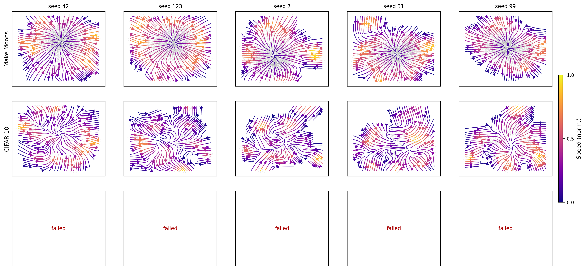
Exp 3 — Ablação do alinhamento temporal (λ)
λ ∈ {0…1}Ablação do parâmetro de alinhamento λ (0 = UMAP puro, 1 = colapsa na referência). Mostra o trade-off entre coerência temporal e fidelidade, justificando λ=0.8.
Varre LAMBDA_SWEEP=[0,0.2,…,1.0]; grid de 3 linhas (geração, fitness, campo vetorial) × 6 λ; curva de coerência.
pixi run python experiments/03_alignment_ablation.py
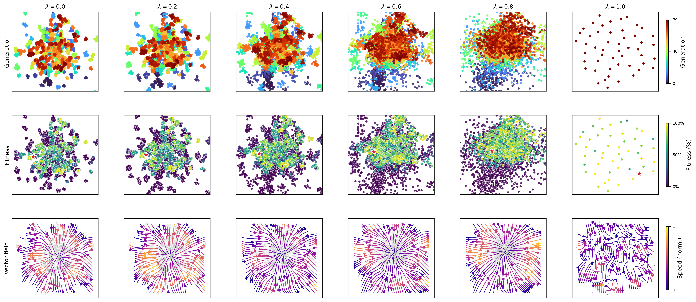
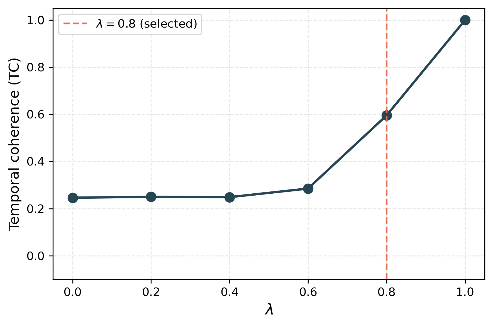
| λ | coerência temporal | atratores | spread σ₁ | veredito |
|---|---|---|---|---|
| 0.0 | 0.25 | 85 | 8.58 | drift — incomparável entre gerações |
| 0.2 | 0.25 | 50 | 6.88 | ainda solto |
| 0.4 | 0.25 | 23 | 5.20 | melhora |
| 0.6 | 0.29 | 14 | 3.53 | bom |
| 0.8 | 0.60 | 19 | 1.88 | ✅ melhor trade-off (alta TC + spread útil) |
| 1.0 | 1.00 | 80 | 0.93 | colapsa na referência (TC trivial, estrutura destruída) |
Por que λ=0.8 (dados reais, make_moons): a TC dá um salto real em 0.8 (0.29→0.60) — não há "plateau" em [0.6,0.9]. Em λ=1.0 a TC vira 1.0 por construção (tudo colapsa na referência, spread 0.93, estrutura destruída). O 0.8 é o ponto que combina coerência alta com spread interpretável (1.88).
Exp 5 — Busca de hiperparâmetros (n_neighbors, min_dist, λ)
grid searchVarredura dos hiperparâmetros do UMAP para o espaço de pesos — base para os defaults (nn=15, min_dist=0.1, λ=0.8) usados no resto do estudo.
Produto cartesiano N_NEIGHBORS×MIN_DIST×LAMBDA; grids scatter + campo vetorial; CSV de métricas.
pixi run python experiments/05_umap_param_search.py
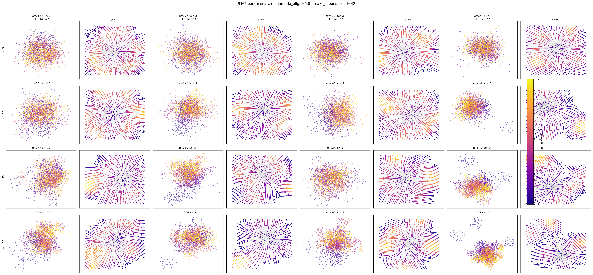
Exp 11 — Quais benchmarks realmente aprenderam
fitness5 seedsportão de confiançaCurvas de fitness + projeção para make_moons e HalfCheetah. Achado crítico: o CIFAR-10 praticamente não aprendeu (fitness final abaixo do acaso). Por isso ele é descartado das análises de fitness adiante — este experimento é o portão que define onde confiar.
Lê caches do Exp 1 (cache/exp1_*.npz) com mean_fitness e embeddings.
pixi run python experiments/11_evolution_summary.py
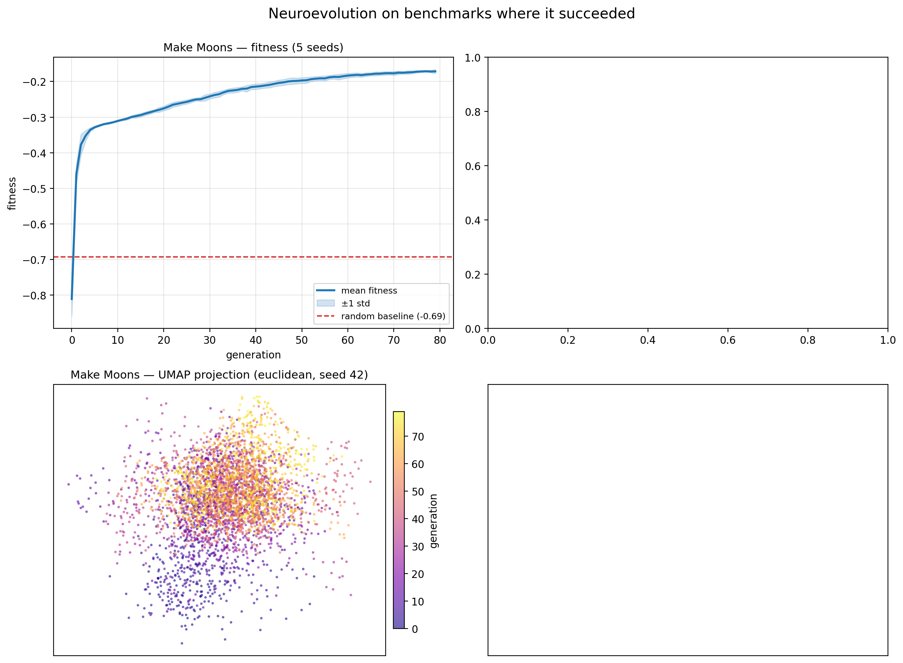
Exp 25 — Sanity-check dos ES (funções com ótimo conhecido)
sphere + rastriginvalidação de corretudeRoda os 4 ES em funções com ótimo conhecido (0): sphere (convexa) e rastrigin (multimodal). Confirma a ordem esperada — CMA/sep-CMA zeram a sphere (0.0000), GA é o mais fraco. Este experimento revelou o bug de sinal (ver nota de integridade): antes da correção, todos divergiam.
evosax em brax/.venv; tell(objetivo) (evosax minimiza); curvas best-so-far (log), 3 seeds.
cd brax && .venv/bin/python es_sanity.py
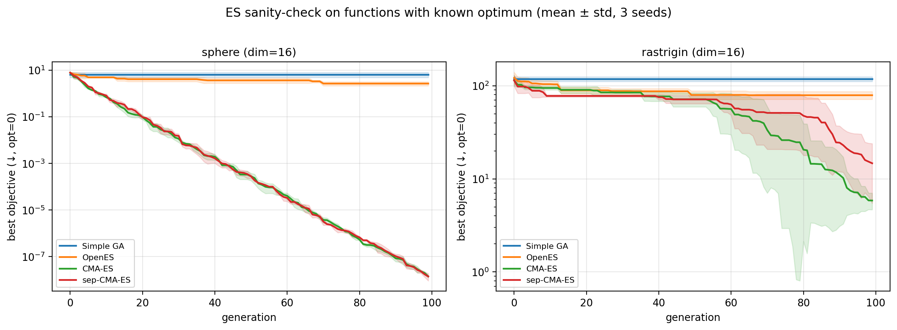
1. Qual métrica de distância?
Com o método validado, a primeira decisão real: o pipeline usava euclidean fixo.
Será a melhor escolha para vetores de peso com sinal? Investigamos todas as métricas que o UMAP oferece.
Exp 8 — Comparação de todas as métricas
31 métricasmake_moonsTestou as ~31 métricas nomeadas do UMAP, medindo coerência temporal e atratores. Métricas binárias (jaccard, hamming…) dão tc=1.0 degenerado (embedding colapsado).
Adicionado metric/metric_kwds em
compute_aligned_umap_embedding; parâmetros (V, VI, p) derivados automaticamente.
pixi run python experiments/08_metric_comparison.py --force-rerun
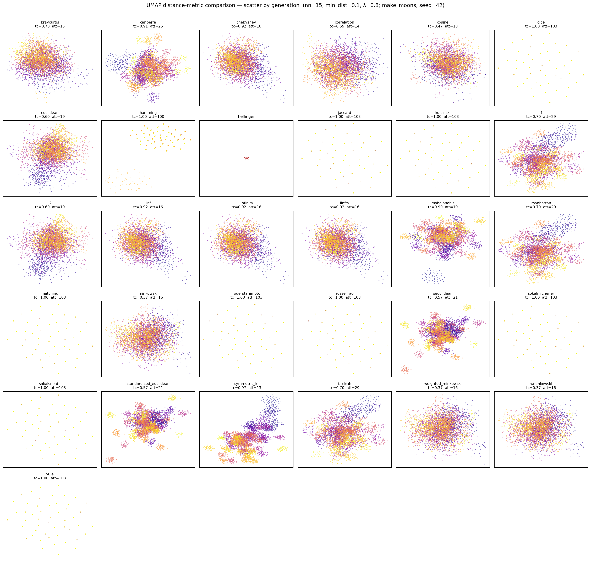
Exp 9 — Validação do top-3 (multi-seed × benchmark)
5 seedsmake_moons + CIFAR-10Validou chebyshev, mahalanobis e euclidean em 5 seeds × 2 benchmarks. Revelou o chebyshev como instável e o mahalanobis como o mais robusto.
Covariância do mahalanobis estimada no mesmo espaço do UMAP (após PCA no CIFAR-10), evitando mismatch.
pixi run python experiments/09_metric_validation.py

Exp 10 — Baixa vs alta dimensão (sem PCA no CIFAR-10)
make_moons vs CIFAR-10teoria angularConfirmou: métricas angulares (cosine) melhoram em alta dimensão. Mostrou que mahalanobis é intratável sem PCA (covariância D×D ≈ 320 GB no CIFAR-10 cru).
PCA desativado; guard que pula o mahalanobis quando a dimensão excede ~2000 (evita OOM).
pixi run python experiments/10_metric_projection_comparison.py
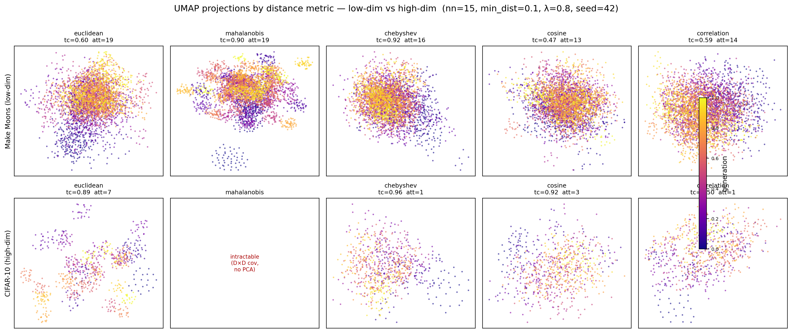
Exp 12 — Métricas nos benchmarks onde a evolução funciona
make_moons + HalfCheetahComparação restrita aos benchmarks confiáveis (CIFAR-10 excluído, ver Exp 11). Veredito: mahalanobis lidera (0.90 / 0.87); chebyshev cai para 0.51 no HalfCheetah.
Pesos do HalfCheetah lidos de brax/runs/simple_ga_seed42.npz (390-dim, sem JAX).
pixi run python experiments/12_metric_comparison_working.py
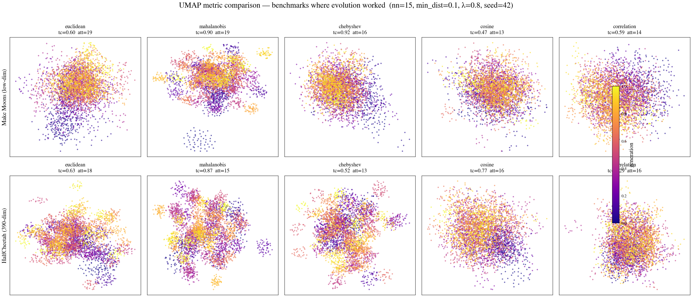
Exp 13 — Mesma comparação, colorida por fitness
organização do landscapegancho do mistérioRecoloriu por fitness (★ = melhor). No make_moons o mahalanobis forma um núcleo de alta-fitness coeso; mas no HalfCheetah nenhuma métrica organiza bem a fitness. Esse fracasso é o gancho da próxima seção.
Fitness do make_moons reavaliada dos pesos cacheados; HalfCheetah lê fitnesses dos runs.
pixi run python experiments/13_metric_comparison_fitness.py
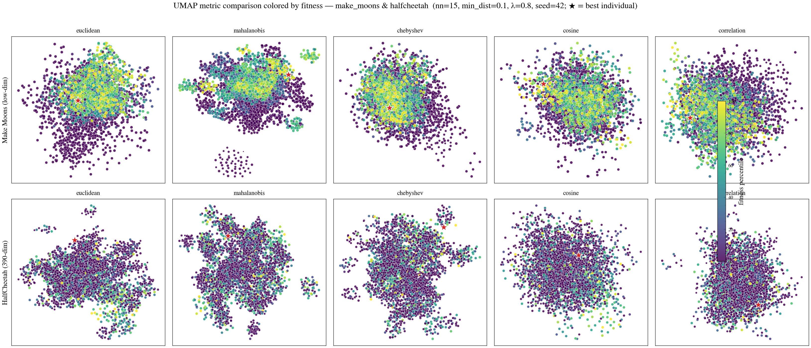
2. O mistério: por que a fitness não se organiza?
O Exp 13 deixou um enigma: no HalfCheetah, redes de fitness parecida ficam espalhadas — nenhuma métrica resolve. Se não é a métrica, será o espaço? Testamos embeddar comportamento em vez de pesos, e a 3ª dimensão.
Exp 14 — Espaço comportamental vs. de pesos (HalfCheetah)
quality-diversityrollout braxTestou se embeddar comportamento organiza melhor a fitness. Resposta inesperada: um descritor cinemático ingênuo (velocidade + distância) é anti-correlacionado com a fitness (dominada por custo de controle).
Rollout das políticas salvas via brax/extract_behavior.py (perfil de x_velocity);
UMAP no descritor; coerência de fitness por k-NN.
cd brax && .venv/bin/python extract_behavior.py --seed 42 cd ../supplementary && pixi run python experiments/14_behavior_vs_weight_space.py
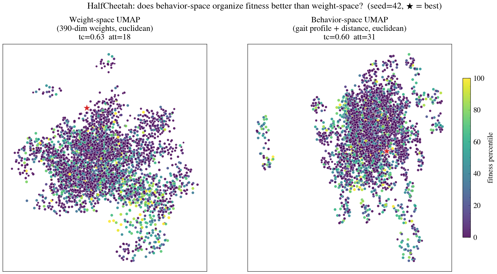
Exp 15 — Descritor comportamental fitness-aware
k-NN fitness corrDescritor rico (marcha+distância+esforço) supera o espaço de pesos (corr 0.35 vs 0.26, +38%); o 2D escolhido a dedo é o pior. A riqueza do descritor importa mais que escolher features manualmente.
extract_behavior.py estendido para coletar custo de controle e componentes da recompensa.
pixi run python experiments/15_fitness_aware_descriptor.py
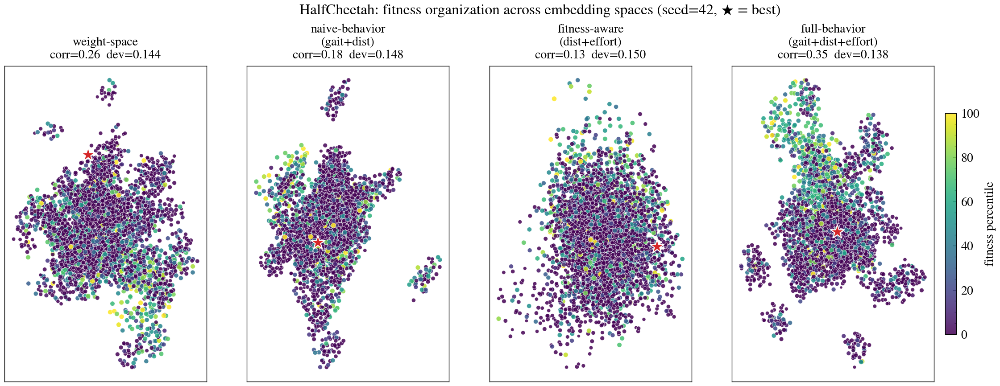
Exp 16 — Embedding 3D
2D vs 3DA 3ª dimensão melhora muito a organização: espaço de pesos sobe de 0.26→0.43 (+67%); em 3D pesos e comportamento empatam. Boa parte da "falha" do espaço de pesos era compressão 2D — mas não toda (ver Seção 3).
Adicionado n_components em compute_aligned_umap_embedding.
pixi run python experiments/16_3d_embedding.py
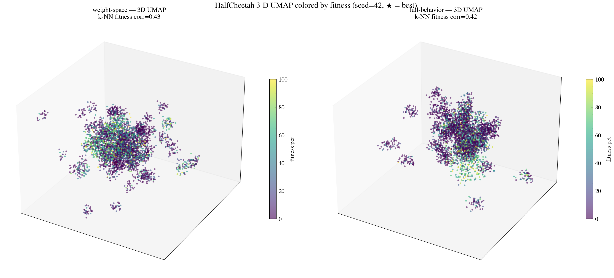
3. A explicação: simetrias da rede
O 3D ajudou, mas não explicou a causa. A pergunta de fundo permanecia: por que redes de fitness igual ficam longe no espaço de pesos? Aqui está a resposta — e ela amarra todo o mistério da Seção 2.
Exp 21 — Longe nos pesos, perto na função
prova empíricaclímaxOs melhores indivíduos dos 4 algoritmos estão distantes no espaço de pesos (dist. ~10) mas computam praticamente a mesma função (correlação de saídas 0.88–0.99, fronteiras idênticas). Esta é a causa raiz: as simetrias da rede (permutação de neurônios, sinal, escala) criam infinitas soluções equivalentes espalhadas pelo espaço de pesos — por isso a fitness não se organiza ali, e por isso os algoritmos nunca convergem ao mesmo ponto.
Reconstrói cada rede, avalia predições, compara distância de pesos vs. correlação de saídas; desenha fronteiras.
pixi run python experiments/21_functional_equivalence.py
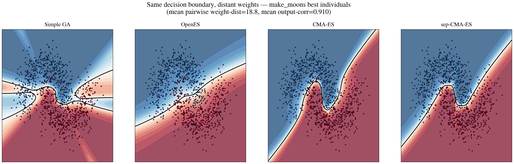
Exp 23 — Embedding de grafo elimina a simetria
espectro do Laplacianotopologia variávelSe a permutação é o problema, um espaço invariante a ela é a cura. Cópias permutadas (idênticas) ficam espalhadas no espaço de pesos (razão intra/entre = 0.96) mas colapsam num ponto no espaço espectral de grafo (razão ≈ 10⁻¹⁵). E o espectro tem tamanho fixo mesmo para topologia variável — rota natural para NEAT.
Rede → grafo ponderado → autovalores ordenados do Laplaciano → PCA. Comparado com o vetor de pesos.
pixi run python experiments/23_graph_embedding_demo.py
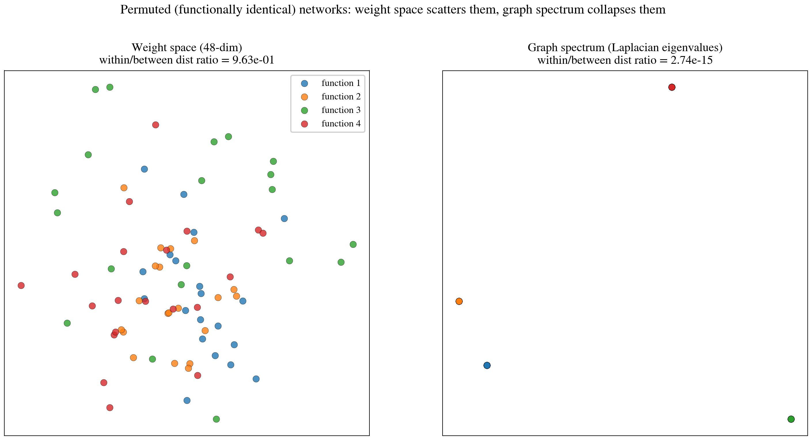
Exp 29 — Embedding de grafo com sinal (fechando a limitação do Exp 23)
Laplaciano assinadopermutação + sinalO espectro |w| do Exp 23 é cego ao sinal: uma rede B com o mesmo |w| mas sinais diferentes (função diferente) recebe o mesmo espectro. Testamos 3 representações contra permutação (mesma função) vs. sign-flip (função diferente, |w| idêntico). O espectro do Laplaciano assinado é o único que colapsa permutações e separa o sign-flip — resolve a limitação.
| representação | d(permutação) | d(sign-flip) | veredito |
|---|---|---|---|
| vetor de pesos | 0.96 | 0.73 | sensível a tudo ✗ |
| |w| spectrum (Exp 23) | 0.00 | 0.00 | colapsa permutação, cego ao sinal ✗ |
| signed spectrum (Exp 29) | 0.00 | 0.14 | invariante a permutação E sensível ao sinal ✓ |
Laplaciano assinado L = diag(Σ|A|) − A com A de pesos com sinal (Kunegis et al.); autovalores ordenados. Distâncias normalizadas pela distância a uma rede aleatória; diferença funcional confirma o ground truth (permutação ≈ 2e-16; sign-flip ≈ 0.64).
pixi run python experiments/29_signed_graph_embedding.py
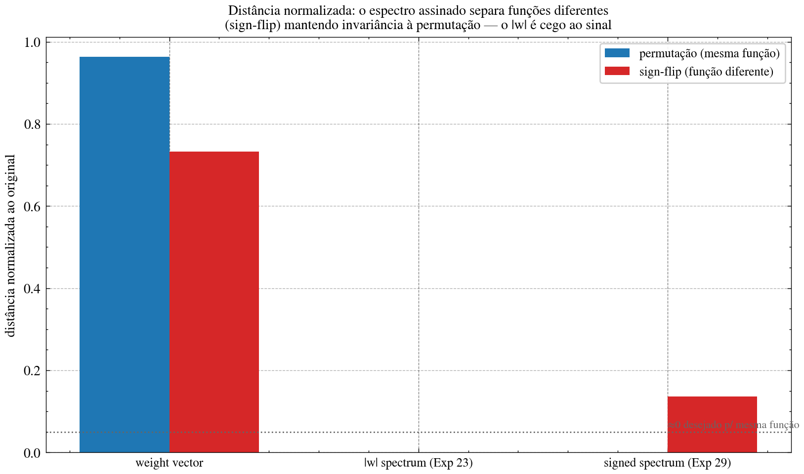
4. A recompensa: a geometria revela o algoritmo
Resolvido o mistério, surge o bônus. Se cada algoritmo busca de um jeito, o joint-UMAP do espaço de pesos vira um diagnóstico: empilhamos os 4 ES num fit único (comparável) e lemos suas "assinaturas" geométricas.
Exp 17 — Joint UMAP dos 4 algoritmos
16.000 indivíduosfit únicoCada ES tem uma assinatura geométrica: GA fragmentado em ilhas, OpenES bolha compacta, CMA/sep-CMA fitas suaves. Cobertura ≠ qualidade: o GA cobre o maior volume (1087) e tem a pior fitness (89.7), enquanto o CMA-ES, com cobertura moderada, atinge a melhor (647.6); o OpenES é o mais compacto mas fica em 3º. Espalhar-se no espaço de pesos não é exploração produtiva.
Empilha as populações de todos os algoritmos e ajusta um único umap.UMAP (euclidean, seed fixa).
pixi run python experiments/17_joint_es_comparison.py
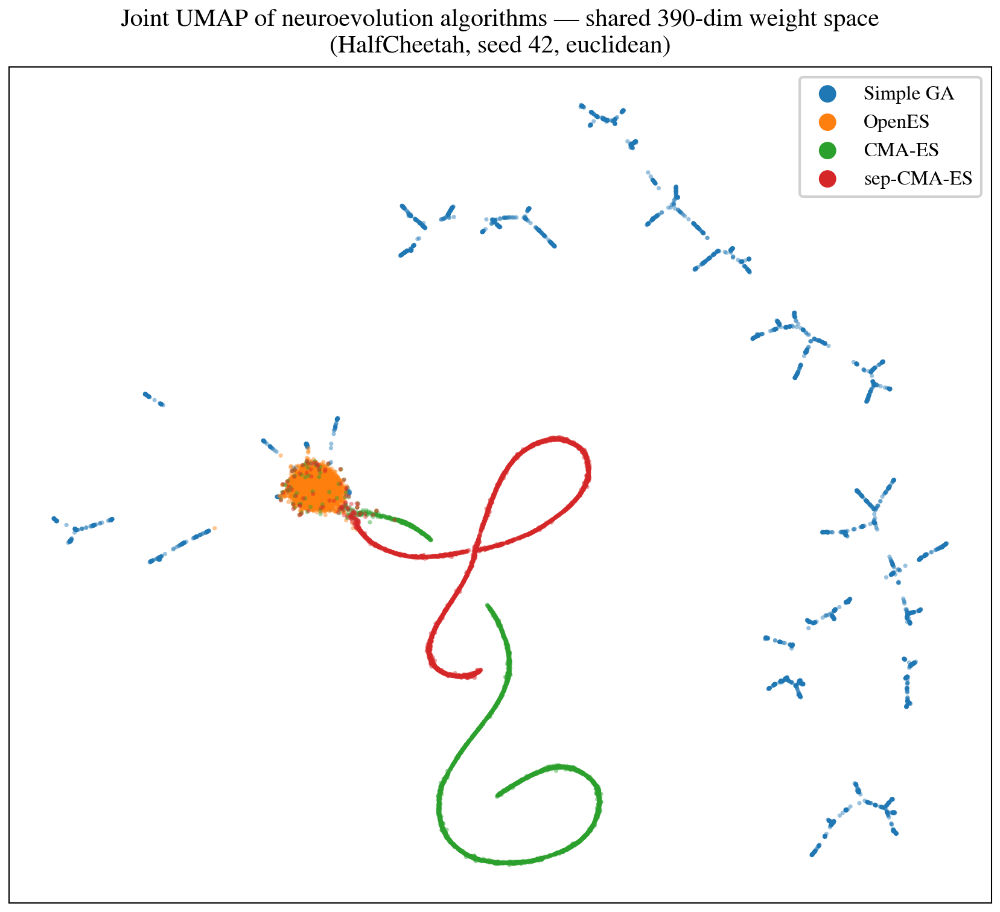
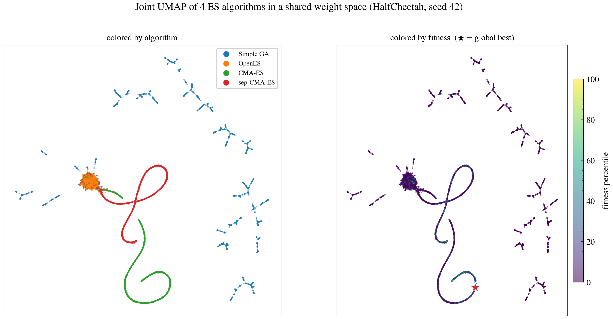
Exp 18 — Multi-seed, run longa, 3D + GIF, tabela
consistênciaGIF rotação(a) Assinaturas consistentes nos seeds 42/7/123 → propriedade do algoritmo. (b) Run longa do OpenES balanceada. (c) 3D + GIF rotacionando. Tabela quantitativa de fragmentação/compactness.
load_runs com subamostragem por run; GIF via PillowWriter; fragmentação via DBSCAN.
pixi run python experiments/18_joint_es_extended.py
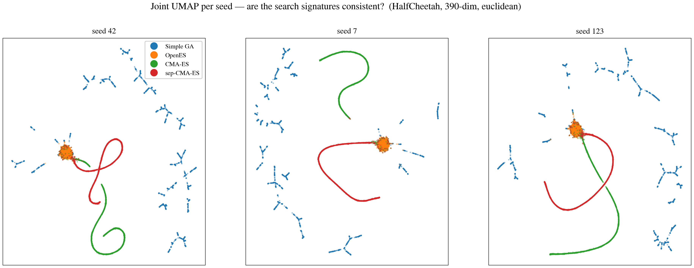
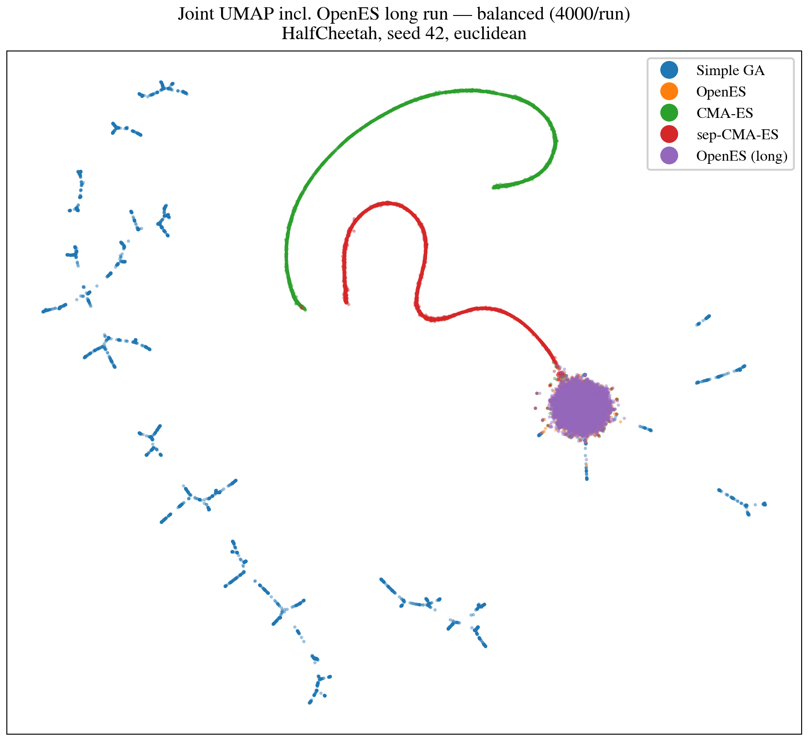
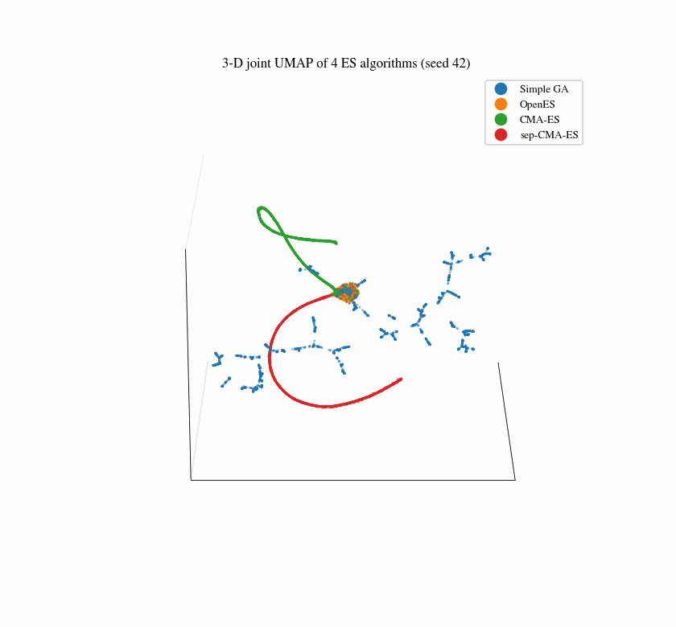
| algoritmo | clusters | compactness | coverage | best fit |
|---|---|---|---|---|
| Simple GA | 143 | 12.30 | 1087 | 89.7 |
| OpenES | 15 | 0.60 | 22.5 | 305.8 |
| CMA-ES | 45 | 4.27 | 210 | 647.6 |
| sep-CMA-ES | 40 | 3.70 | 120 | 523.4 |
Exp 19 — Mesmo estudo no make_moons
48-dimevosaxAs assinaturas se repetem no make_moons (GA fragmentado, OpenES compacto, CMA fitas) — invariantes à tarefa. Com defaults do evosax, só o OpenES converge bem.
Runs via brax/moons_evosax.py (fitness pura em JAX); dataset pré-gerado com sklearn.
cd brax && .venv/bin/python moons_evosax.py --all_algos --seed 42 cd ../supplementary && pixi run python experiments/19_joint_es_moons.py
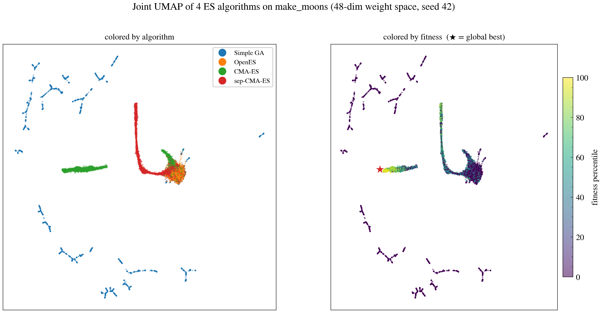
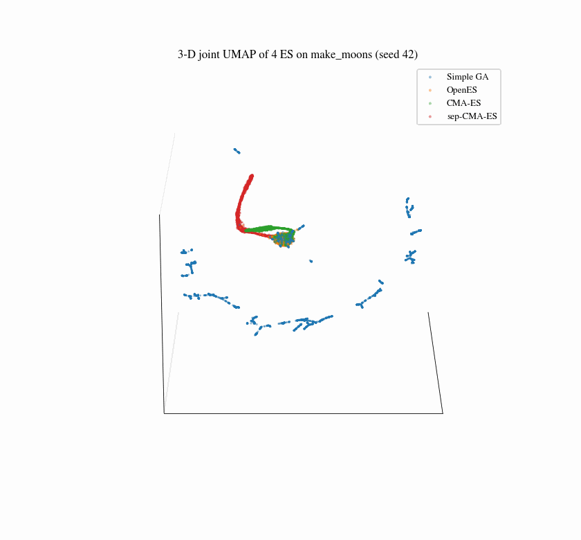
Exp 24 — As assinaturas são invariantes à tarefa? (validação cross-task)
4 tasks × 3 seedsblobs/moons/circles/xorResponde à principal fraqueza apontada em revisão: a alegação "invariante à tarefa" se apoiava em 2 tasks. Aqui os 4 ES rodam em 4 tarefas de classificação (dificuldade crescente: blobs < moons < circles < xor). Resultado: a assinatura se mantém em todas — o Simple GA fragmenta em 118–130 clusters e é o mais espalhado (compactness 4–5× a mediana) em cada task; os ES de distribuição ficam compactos (3–20 clusters). Padrão idêntico.
Datasets via sklearn; runs por brax/moons_evosax.py --task; fragmentação medida no
UMAP 2D (DBSCAN), compactness no espaço de pesos cru (relativa por task).
cd brax && for t in circles blobs xor; do .venv/bin/python moons_evosax.py --all_algos --seed 42 --task $t; done cd ../supplementary && pixi run python experiments/24_cross_task_signatures.py
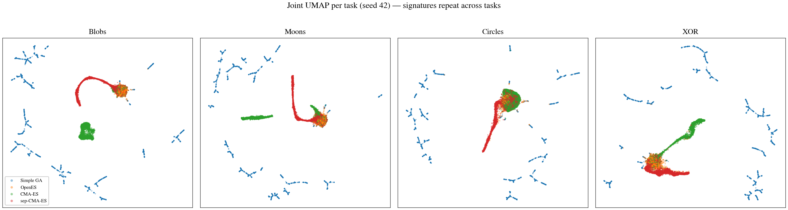
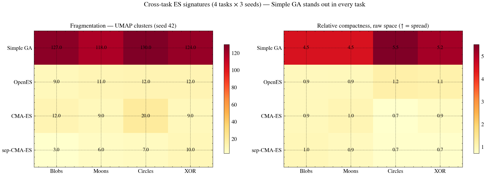
Exp 28 — Resolvendo o confound de multimodalidade do paper (ablação controlada)
controladodim vs σ vs largura3 seedsO paper observa que make_moons (compacto) e CIFAR-10 (multimodal) diferem — mas em dimensão, σ de mutação E arquitetura ao mesmo tempo — e deixa o desentrelaçamento como trabalho futuro. Aqui variamos um fator de cada vez (base d_in=2, hidden=16, σ=0.11) e medimos a multimodalidade (spread σ₁ do UMAP alinhado). Resultado decisivo:
| fator variado | faixa de spread σ₁ (Δ) | papel |
|---|---|---|
| mutação σ (0.03→0.20) | 0.09 (1.82→1.91) | quase nulo — não é o motor |
| largura oculta (8→64) | 0.47 (1.74→2.21) | moderado |
| dimensão de entrada (2→200) | 0.60 (1.91→2.51) | motor dominante |
Tarefa = two-moons com dimensões de ruído (só as 2 primeiras informativas), para subir a dimensão de entrada sem mudar a dificuldade; sem PCA (o fator varrido é a única mudança). A dimensionalidade dirige a multimodalidade; a mutação σ praticamente não. Isso fecha a fraqueza declarada no paper: o σ (0.11 vs 0.05) está descartado como causa, e a diferença make_moons↔CIFAR-10 é consistente com um efeito de dimensionalidade.
pixi run python experiments/28_controlled_confound.py
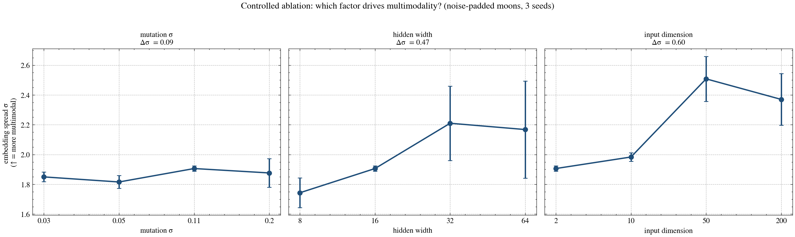
Exp 20 — GIFs de evolução temporal
dinâmicageração a geraçãoAnima a busca no tempo: a população "marcha" pelo espaço. CMA desliza coeso pela fita; OpenES estaciona; GA brota ilhas. Mostra a dinâmica, complementando a estrutura estática.
Reusa embeddings 2D cacheados; reconstrói o índice de geração por ponto; FuncAnimation.
pixi run python experiments/20_temporal_evolution_gif.py
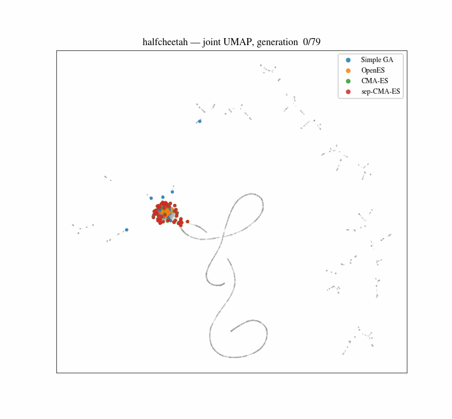
exp20_make_moons_evolution.gif para o make_moons.)Exp 22 — Curvas quantitativas de dinâmica de busca
espaço de pesos cruConverte a leitura visual em séries temporais: dispersão (contração=convergência), velocidade do centróide e fitness. Desambigua o que a geometria sozinha não diz: o CMA-ES contrai (spread final/inicial 0.37–0.78 → convergência saudável) nos dois benchmarks, enquanto o Simple GA expande (ratio 4.18 → dispersão sem convergência); o OpenES é estacionário (deriva ≈ 0). Mesma "fita" visual, dinâmicas distintas reveladas pelas curvas.
Métricas no espaço de pesos cru (não no embedding, que distorce distâncias).
pixi run python experiments/22_search_dynamics.py
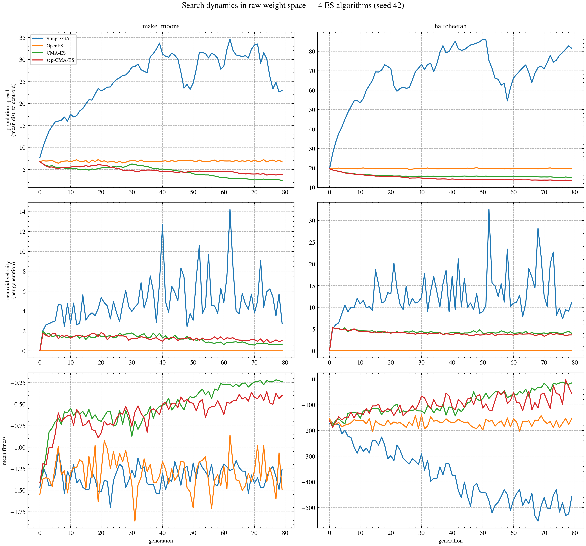
Conclusões
- Métrica:
euclideané o baseline robusto;mahalanobisé o melhor quando a dimensão permite a covariância;cosineajuda em alta dimensão; binárias e KL são inadequadas para pesos com sinal. - Dimensão: 3D para análise (organiza muito melhor a fitness), 2D para figuras.
- O mistério e sua causa: o espaço de pesos é cego à equivalência funcional — simetrias (permutação/sinal/escala) espalham soluções idênticas. É por isso que a fitness não se organiza ali.
- A cura: espaço comportamental (rico) ou de grafo (invariante a permutação) — que também estende para topologia variável.
- A recompensa: o fit conjunto no espaço de pesos revela assinaturas geométricas de busca invariantes à tarefa — validado em 4+ tarefas (blobs/moons/circles/xor + HalfCheetah): o Simple GA fragmenta em todas, ES de distribuição ficam compactos.
- Confound resolvido: a multimodalidade é dirigida pela dimensionalidade (Δσ₁=0.60), não pela mutação σ (Δσ₁=0.09) — fechando a ambiguidade que o paper deixou em aberto (Exp 28).
- Aplicação: a dinâmica populacional (diversidade/velocidade) é um sinal de alerta precoce de convergência prematura — legível já na geração ~5, com ~50 gerações de antecedência sobre o platô de fitness. Demonstra concretamente a utilidade proposta (e não mostrada) no paper.
- Corretude: sanity-checks (ES em funções com ótimo conhecido) são essenciais — pegaram um bug de sinal que invertia a otimização. Sempre validar o otimizador antes de interpretar resultados.
- Escopo: toda a análise pressupõe topologia fixa.
5. Ferramentas interativas e visualização em escala
Além das figuras estáticas, o projeto inclui ferramentas para explorar as projeções de forma interativa e para renderizar populações de 1M+ pontos — material que complementa a dissertação como infraestrutura.
Ferramenta interativa (Streamlit + Plotly)
UMAP alinhadocampo de velocidadetempo realInterface web que expõe os componentes do método (UMAP alinhado + campo de velocidade) com controles de população, gerações, dimensão oculta, taxa de mutação e λ, alternando entre render estático (Matplotlib) e interativo (Plotly, com hover/zoom/pan). É o que atende ao pedido de interatividade sem reconstruir nada.
cd supplementary && pixi run app # ou: pixi run python -m streamlit run app.py
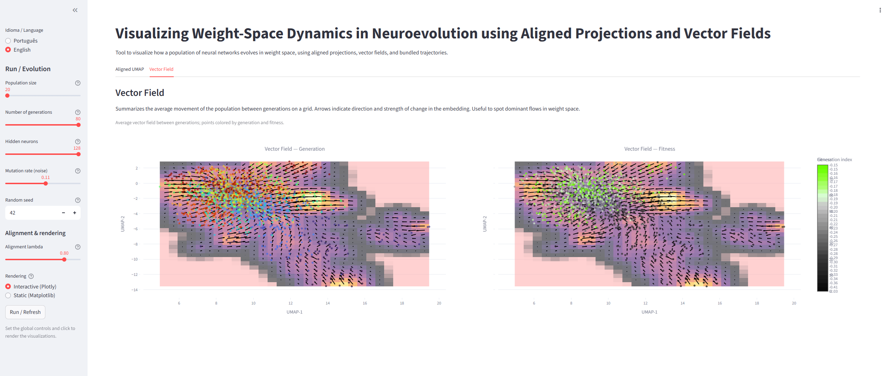
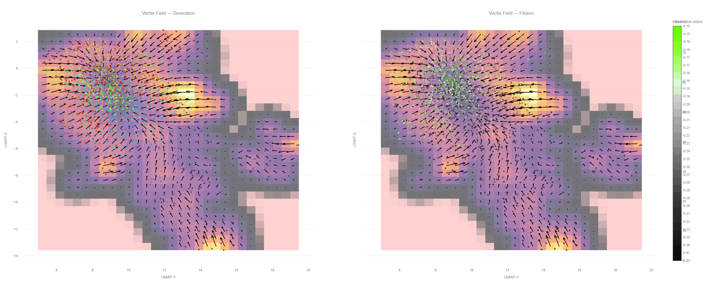
Visualização em escala (Datashader / Panel / HoloViews)
1M+ pontosHalfCheetah realPipeline datashader que renderiza populações enormes por agregação em histograma (O(grid²), independe de n) —
explorador interativo (interactive_datashader.py) e figura-resumo composta por seed.
cd supplementary && pixi run panel serve ../brax/interactive_datashader.py --show # figura composta: cd brax && .venv/bin/python figure_summary.py
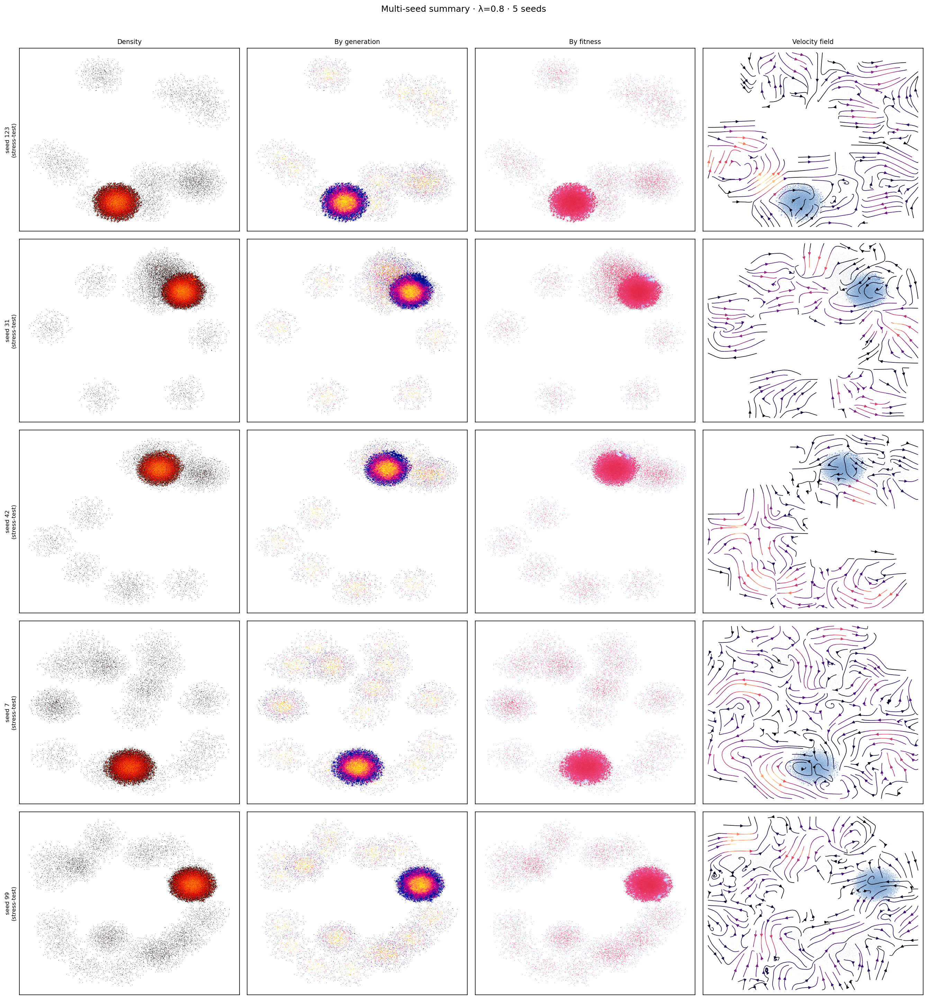
Trajectory bundling
viz complementarAgrupamento de trajetórias (edge bundling) com transparência adaptativa e destaque da melhor trajetória — leitura alternativa do fluxo evolutivo, complementar ao campo de velocidade.
supplementary/visualizations/trajectory_bundling.py
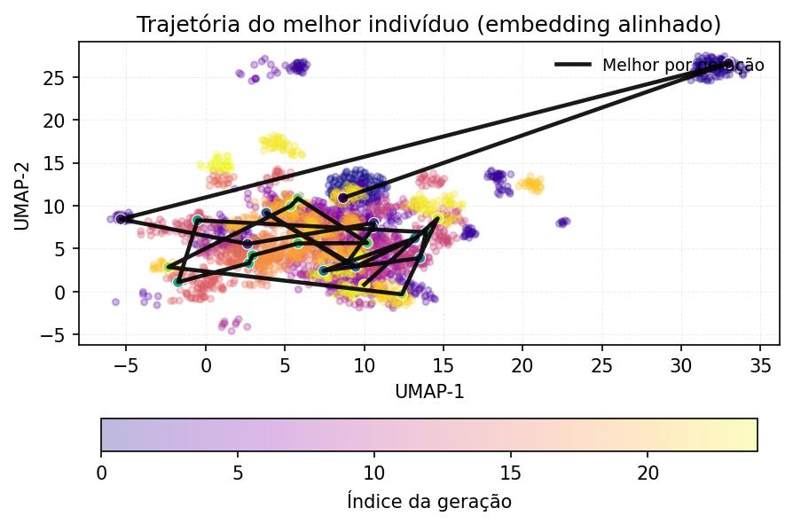
6. Aplicação: detecção de convergência prematura
O paper propõe usar a geometria da população como sinal de alerta precoce, mas não demonstra. Aqui fechamos essa lacuna: mostramos que a dinâmica populacional prediz convergência prematura cedo o bastante para intervir.
Exp 26 — Dinâmica populacional como alerta precoce
make_moonsσ ∈ {0.02…0.20}3 seedsVariando a escala de mutação σ, induzimos regimes do congelado ao caótico e rastreamos por geração: fitness, diversidade populacional e velocidade do centróide (a essência escalar do campo de velocidade). Achado: a diversidade inicial (gerações 1–5) prediz a fitness final — um U invertido em que diversidade baixa demais (congelado, σ=0.02 → fitness −0.26) ou alta demais (caótico, σ=0.20 → −0.21) pioram; o regime saudável (σ=0.11) vence (−0.17). O colapso de diversidade do σ=0.02 é detectável já na geração ~3, contra o platô de fitness só por volta da geração ~53 — ~50 gerações de antecedência para intervir.
GA do supplementary (otimização correta, sem evosax); diversidade = distância média ao centróide no espaço de pesos cru; alerta = colapso de diversidade enquanto a fitness ainda é baixa.
pixi run python experiments/26_premature_convergence.py
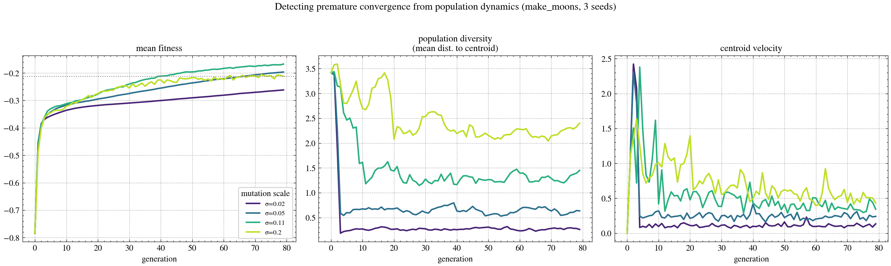
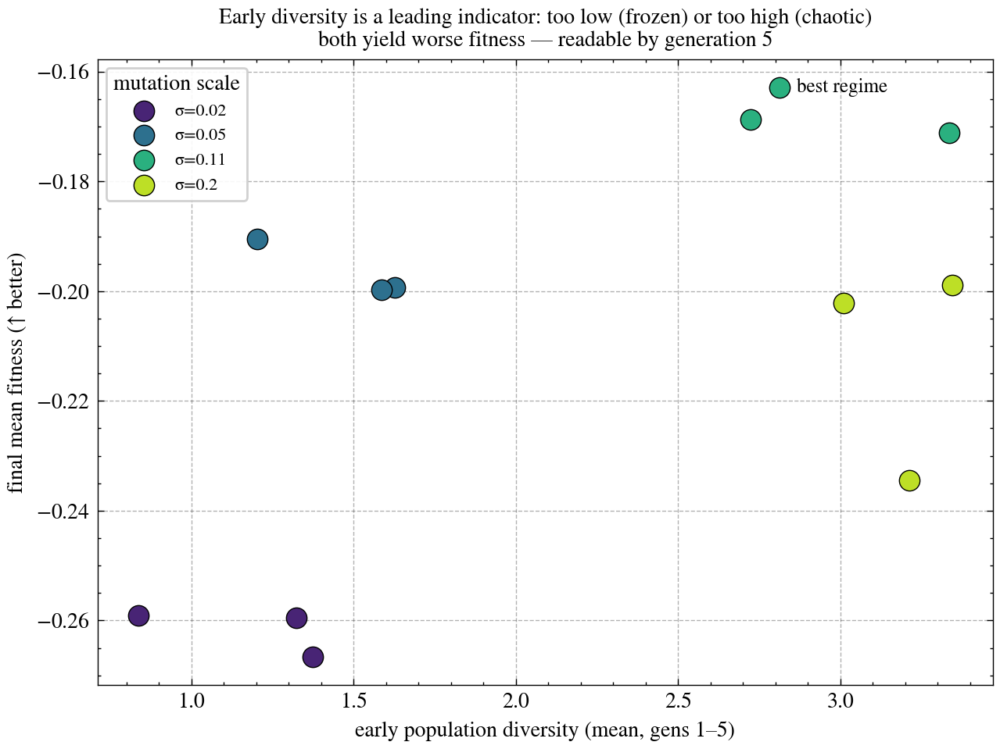
Exp 27 — Alocação de offspring guiada por localização de fitness
make_moons5 seeds3 estratégiasSegunda aplicação proposta no paper: usar a localização espacial dos indivíduos de alta fitness para alocar offspring de forma não-uniforme. Comparamos três estratégias de seleção de pais num GA idêntico: uniforme (baseline), fitness-weighted (concentra nos melhores — "ao redor do atrator") e diversity-weighted (favorece elites espalhados). Resultado: a fitness-weighted vence (−0.168 vs −0.174 do baseline) com menor variância (±0.005 vs ±0.008) — ganho modesto mas consistente.
GA do supplementary com probabilidade de pais configurável. A fitness-weighted reduz a diversidade (painel direito) — no make_moons (quase-unimodal) isso ajuda, mas em tarefas multimodais a mesma concentração arriscaria convergência prematura (liga ao Exp 26). A geometria, portanto, serve para balancear exploração e explotação, não só concentrar.
pixi run python experiments/27_offspring_allocation.py
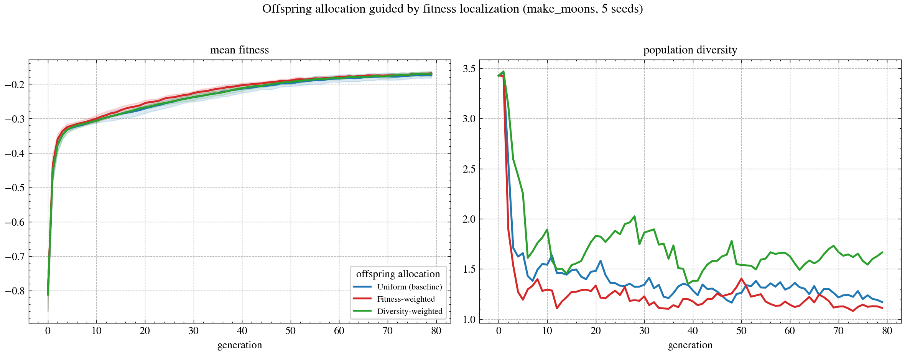
Limitações e trabalhos futuros
- Topologia fixa. Todo o método assume redes de mesma dimensão (necessário para distâncias no espaço de pesos). Topologia variável (NEAT) exige espaços invariantes — comportamental ou de grafo (Exp 23 é o primeiro passo).
- Espectro de grafo descarta o sinal dos pesos (usa |w|). Trabalho futuro: WL kernel com pesos com sinal ou embeddings de GNN, que preservam mais estrutura.
- Descritor comportamental é dependente de domínio. No HalfCheetah, um descritor cinemático ingênuo é anti-correlacionado com a fitness; descritores fitness-aware ricos funcionam melhor, mas exigem conhecimento da tarefa.
- Escala de validação. Cross-task cobre 4 tarefas de classificação 2D + HalfCheetah; estender a mais domínios de controle (CartPole, MountainCar) e a redes maiores reforçaria a generalidade.
- Estocasticidade de RL. A fitness do HalfCheetah tem alta variância intra-geração; múltiplos episódios por avaliação reduziriam ruído nas projeções coloridas por fitness.
- Apresentação. Projeções 3D ganham com interatividade (rotação/zoom/hover) — versão interativa (Plotly) é um próximo passo natural para exploração.
Apêndice — validações secundárias
Experimentos de suporte que sustentam as escolhas do método, mas que não fazem parte do fio condutor principal.
Exp 2 — Baselines de projeção (UMAP vs PCA vs t-SNE)
Justifica a escolha do UMAP contra baselines (PCA, t-SNE) em preservação de estrutura temporal e separação de atratores.
pixi run python experiments/02_projection_baselines.py
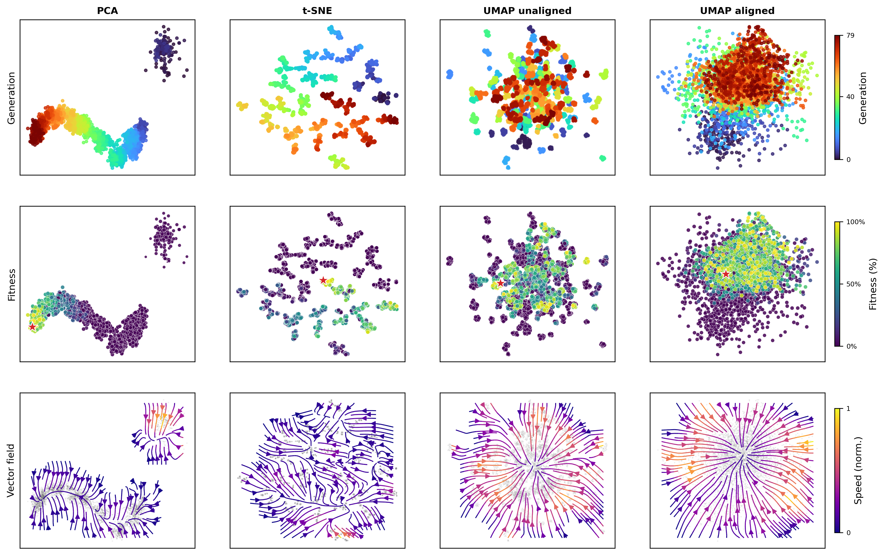
Exp 4 — Teste sintético (ground truth)
Valida o método em dados sintéticos com estrutura conhecida (1 e 4 gaussianas): a contagem de atratores recupera o ground truth.
pixi run python experiments/04_synthetic_unimodal_test.py
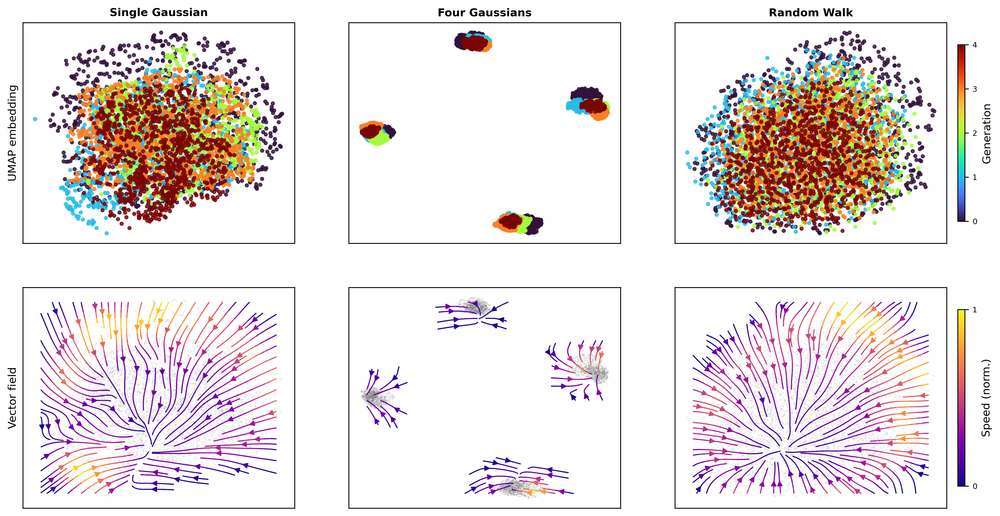
Exp 6 — UMAP de geração única
Projeção de uma única geração (sem componente temporal) em grids de hiperparâmetros — isola o efeito espacial do UMAP do alinhamento.
pixi run python experiments/06_single_gen_umap.py
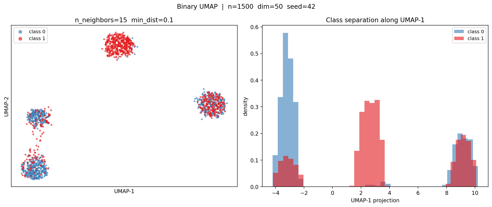
Exp 7 — UMAP em escala (1M+ pontos)
Escalabilidade: ajusta num subconjunto estratificado e usa .transform() em lotes;
renderiza por histograma 2D (O(grid²), independente de n).
pixi run python experiments/07_large_scale_umap.py
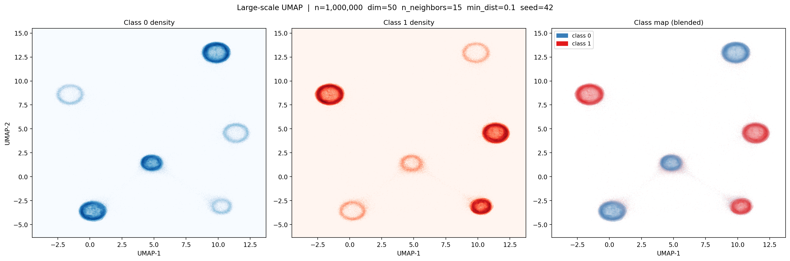